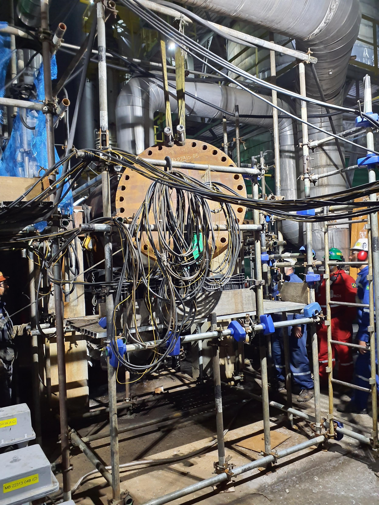
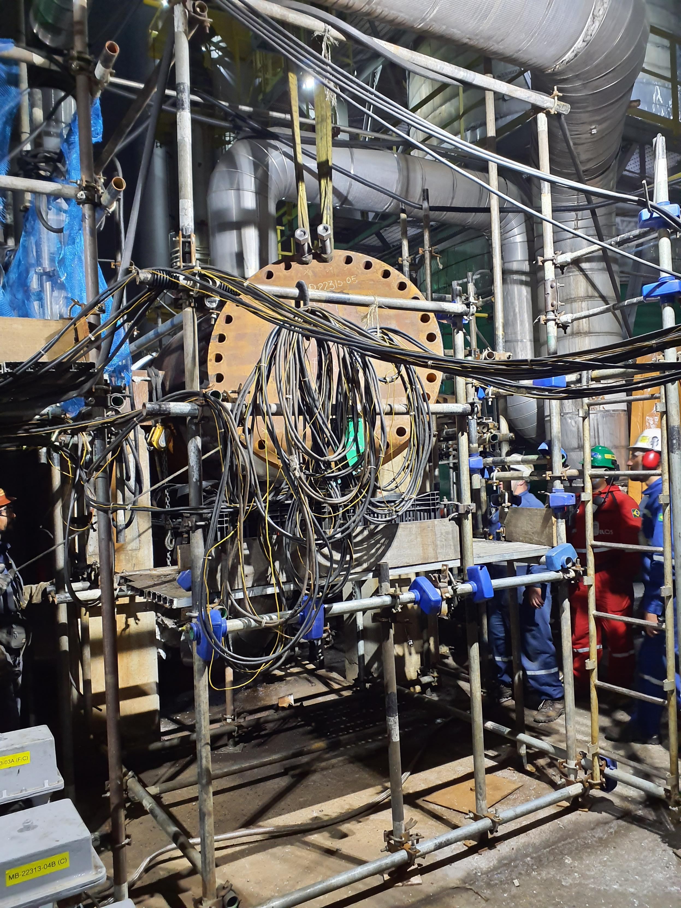

P-22313-03 A/B
Substituição de Bocais:
Substituir os bocais C1, C2, T1 e T2 em oficina, seguindo as diretrizes das normas DIP CENPES/PDISO/TMC 000152/2019 e CT TMC 073/2019.Rev.1.
Recuperação de Canais:
Recuperar os canais internos do casco, do carretel e da sede do espelho com enchimento e usinagem.
Substituição de Componentes:
Trocar o diafragma e usinar a sede de assentamento do diafragma.
Substituir 100% dos parafusos internos, prisioneiros externos, parafusos intermediários, e prolongadores.
Comprar e substituir lâminas de selagem, parafusos e chapas de fixação.
Pintar a base metálica.
Feixe Tubular:
Remover, limpar e inspecionar o feixe tubular.
Realizar hidrojateamento e ensaio de CP (corrente de polarização) em 100% dos tubos.
Casco:
Realizar inspeção preliminar e limpeza geral do casco.
Fazer inspeção visual e preparar as soldas circuferenciais para ensaio de líquido penetrante.
P-22313-03 C
Recuperação de Canais:
Realizar enchimento de solda e usinagem dos canais internos do casco, carretel e sede do espelho formados durante a remoção do feixe,
conforme especificações técnicas.
Troca de Componentes:
Substituir o diafragma e usinar sua sede de assentamento de acordo com o projeto.
Substituir 100% dos parafusos, prisioneiros, prolongadores e outros componentes, além de adquirir e trocar lâminas de selagem e fixadores.
Pintar a base metálica.
Feixe Tubular:
Remover o feixe tubular para limpeza, realizar hidrojateamento a 12.000 PSI e preparar para ensaio de Íris em 32 tubos.
Realizar também ensaio de líquido penetrante em 10% das soldas de selagem.
Casco:
Realizar inspeção preliminar.
limpeza geral.
inspeção visual e ensaio de líquido penetrante nas soldas circuferenciais e no tampo boleado.
P-22313-04
Substituição de Bocais:
Trocar os bocais C1, C2, T1 e T2 em oficina.
conforme avaliação técnica atualizada.
Recuperação de Canais:
Preencher com solda e realizar usinagem nos canais internos do casco.
carretel e espelho formados durante a remoção do feixe.
Troca de Componentes:
Substituir o diafragma e usinar a sede de acordo com o projeto.
Trocar 100% dos parafusos, prisioneiros, prolongadores e adquirir novos itens como lâminas de selagem e chapas de fixação.
Pintar a base metálica.
Feixe Tubular:
Remover o feixe para limpeza.
realizar hidrojateamento (12.000 PSI) e testes em 100% dos tubos.
Casco:
Executar inspeção preliminar.
limpeza.
inspeção visual e ensaio de líquido penetrante nas soldas.
incluindo a do tampo boleado.
P-22313-05
Substituição do Diafragma:
Comprar e substituir o diafragma soldado e usinar a sede de assentamento de acordo com as dimensões do projeto.
Trocar parafusos e porcas da tampa meia lua (estimado em 20%).
Ensaios:
Correntes Parasitas: Realizar o ensaio em 100% dos tubos.
Líquido Penetrante: Testar as juntas soldadas do casco, espelho, conexões T1 e T2, chapa divisória e 10% das soldas de selagem do espelho.
Partícula Magnética: Ensaiar as juntas soldadas das conexões C1, C2 e dos flanges norte e sul com o casco.
Feixe Tubular:
O feixe tipo "U" não deve ser removido, devendo permanecer fixo ao carretel e calçado ao longo do seu comprimento.
Realizar hidrojateamento (mínimo de 12.000 PSI), inspeção visual e ensaio de correntes parasitas em todos os tubos.
Casco:
Abrir o casco mantendo o feixe fixo e calçado durante todo o processo.
Executar limpeza interna e realizar inspeção visual após a limpeza.
P-22313-06 A
Substituir o feixe tubular. O feixe e o seu carretel.
Realizar ensaio de Íris em 32 tubos no passe superior e 32 tubos no passe inferior para histórico.Rev.1.
Substituir 10% dos estojos e porcas da tampa do carretel
Substituir 10% dos parafusos e porcas da meia lua
comprar e substituir as lâminas de selagem " sealing strip ", parafusos e chapas de fixação
CASCO:
Abrir e remover o casco
Efetuar inspeção visual preliminar do casco
Efetuar limpeza interna do casco
Após essa limpeza, efetuar a inspeção visual interna do casco
Efetuar preparação / limpeza e PM nas soldas das conexões C1 e C2 com o casco
P-22313-06 B
Substituir o feixe tubular. O feixe e o seu carretel.
Realizar ensaio de Íris em 32 tubos no passe superior e 32 tubos no passe inferior para histórico.Rev.1.
Substituir 10% dos estojos e porcas da tampa do carretel
Substituir 10% dos parafusos e porcas da meia lua
comprar e substituir as lâminas de selagem " sealing strip ", parafusos e chapas de fixação
CASCO:
Abrir e remover o casco
Efetuar inspeção visual preliminar do casco
Efetuar limpeza interna do casco
Após essa limpeza, efetuar a inspeção visual interna do casco
Efetuar preparação / limpeza e PM nas soldas das conexões C1 e C2 com o casco
P-22313-07 A
Realizar ensaio de partícula magnética nas juntas soldadas da chapa divisória com o carretel e nas
juntas soldadas do suporte da tampa inferior (meia lua) com o carretel.
Realizar ensaio de líquido penetrante em 100% das soldas de selagem dos tubos com o espelho.
Efetuar preparação/limpeza e Líquido Penetrante em uma área de 0,5 m² na superfície externa dos
tubos (principalmente na região de curvatura).
Esses locais deverão ser escolhidos pela RPBC/IE.
Feixe Tubular:
Abrir e remover o casco com o feixe junto (dentro) dele.
Sacar o feixe. Feixe tipo “U”. Prever a fixação do casco para que o feixe possa ser sacado.
Efetuar inspeção preliminar de todos os componentes do feixe. (Rev.2)
Executar hidrojateamento do feixe (utilizar pressão mínima de 12.000 PSI). (Rev.2)
Efetuar inspeção visual de todos os componentes do feixe. (Rev.2).
Limpar e preparar para ensaio IRIS, 32 tubos escolhidos pela RPBC/IE. (Rev.2)
.jpg)

P-22313-07 B
Montar acesso, exaustão e iluminação, onde necessário, para inspeção do equipamento.
Realizar inspeção visual (com registro de imagem) das escadas, plataformas e guarda corpos, se tiver.
Preparar a superfície e realizar ensaio de ME, conforme indicado no croqui anexo. Total de 15 pontos.
Realizar inspeção visual externa do equipamento (com registro de imagem), incluindo: saia, berço ou
perna (dependendo do tipo de equipamento), olhal de içamento (se tiver), isolamento térmico (se tiver:
atentar para CSI) concreto fire proof (se tiver), chumbadores (se tiver) e aterramento elétrico.
Realizar martelamento das conexões soldadas com diâmetro menor ou igual à 2’’.
OBSERVAÇÃO: Os acessórios roscados, plugues e niples roscados NÃO DEVEM ser martelados.
FEIXE:
Abrir e remover o casco com feixe junto (dentro) dele.
Sacar o feixe. Feixe tipo “U”.
OBSERVAÇÃO: Prever a fixação do casco para que o feixe possa ser sacado.
Efetuar inspeção preliminar de todos os componentes do feixe.
Executar hidrojateamento do feixe (utilizar pressão mínima de 12.000 PSI).
.jpg)
.jpg)
.jpg)
.jpg)


.jpg)


.jpg)
.jpg)
 

.jpg)


.jpg)

.jpg)
.jpg)